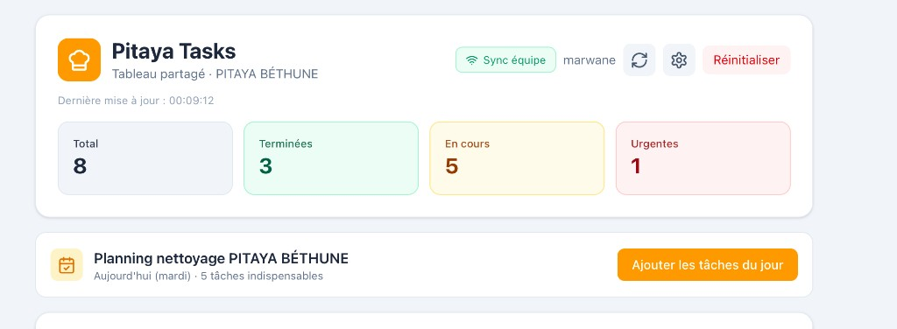
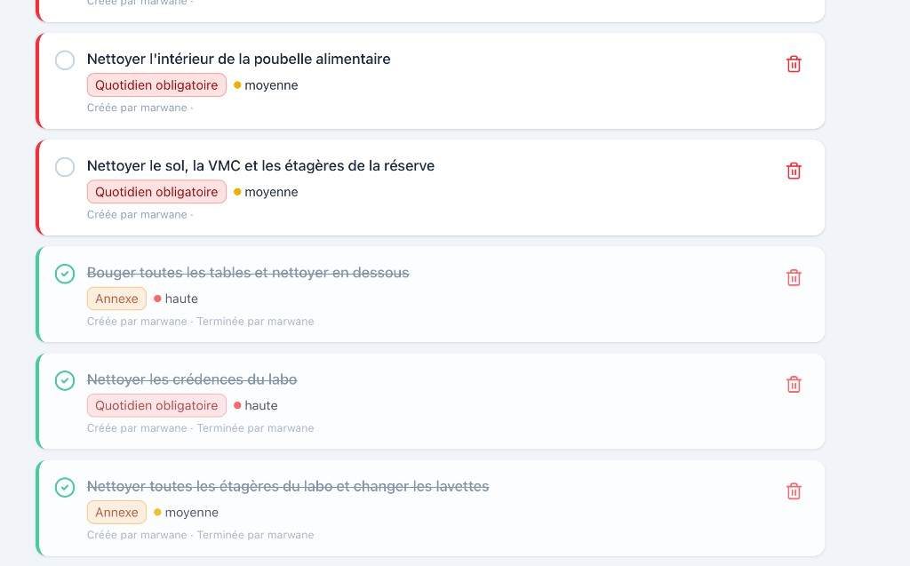

Rapport de projet — Pitaya Tasks
Application de gestion des tâches partagée — PITAYA BÉTHUNE
1. Présentation du projet
Pitaya Tasks est une application web qui permet à l’équipe du restaurant PITAYA BÉTHUNE de gérer les tâches de nettoyage et d’organisation au quotidien. Il s’agit d’un tableau de bord partagé : tous les managers voient et modifient la même liste de tâches en temps réel, depuis leur téléphone ou leur ordinateur, sans installation d’application.
Objectifs :
- Centraliser les tâches indispensables et annexes sur un seul outil.
- Permettre à plusieurs personnes de suivre l’avancement et de cocher les tâches réalisées.
- Synchroniser les données entre tous les appareils (sync équipe).
- Utiliser un code couleur et des alertes pour prioriser le travail.
2. Ce que fait l’application (fonctionnalités)
2.1 Trois catégories de tâches
L’application distingue trois types de tâches avec un code couleur :
| Type |
Couleur |
Rôle |
| Quotidien obligatoire |
Rouge |
Tâches à faire chaque jour (nettoyage, réserve, labo, etc.). |
| Annexe |
Orange |
Tâches supplémentaires ou ponctuelles. Si non faites, elles réapparaissent le lendemain. |
| À faire dans la semaine |
Vert |
Tâches à réaliser dans la semaine, sans obligation journalière. |

2.2 Tableau de bord et statistiques
En haut de l’écran, l’utilisateur voit en un coup d’œil :
- Total : nombre total de tâches.
- Terminées : tâches cochées comme réalisées.
- En cours : tâches restant à faire.
- Urgentes : tâches marquées prioritaires (priorité haute).

2.3 Planning nettoyage PITAYA BÉTHUNE
Un bloc « Planning nettoyage PITAYA BÉTHUNE » affiche le jour actuel (ex. « Aujourd’hui (mardi) ») et le nombre de tâches indispensables du jour. Un bouton « Ajouter les tâches du jour » permet d’ajouter en un clic toutes les tâches prévues pour ce jour dans la liste (planning défini par jour : lundi, mardi, etc., sauf samedi).

2.4 Synchronisation équipe
Quand la synchronisation est activée (via Supabase), un badge « Sync équipe » apparaît en haut à droite. Tous les managers qui ouvrent le même lien (partagé par l’équipe) voient la même liste à jour : les tâches créées, cochées ou supprimées par l’un sont visibles pour les autres. Aucune configuration n’est demandée sur chaque téléphone ou ordinateur si l’administrateur a configuré une fois l’application sur Vercel.
2.5 Alertes et rappels
- Rappel fin de journée : à partir de 18 h, si des tâches ne sont pas réalisées, une bannière alerte l’utilisateur (« Rappel fin de journée : X tâche(s) non réalisée(s) ») avec un bouton « J’ai compris » pour la fermer.
- Report des tâches annexes : les tâches de type « Annexe » non faites sont automatiquement reportées au jour suivant, afin qu’elles réapparaissent dans la liste.
2.6 Gestion des tâches
- Création : formulaire « Nouvelle tâche » avec titre, type (Quotidien / Annexe / Semaine), priorité (basse, moyenne, haute), option « Assigné à », date/heure si besoin.
- Filtres : boutons pour afficher « Toutes » les tâches, ou uniquement « Quotidien obligatoire », « Annexe », « À faire dans la semaine ».
- Cocher / Terminer : clic sur le cercle à gauche de la tâche pour la marquer comme terminée (avec enregistrement de qui l’a terminée).
- Suppression : icône poubelle à droite de chaque tâche pour la supprimer. Bouton « Effacer terminées » pour supprimer en une fois toutes les tâches déjà cochées.